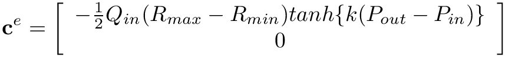
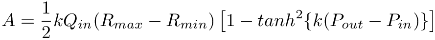
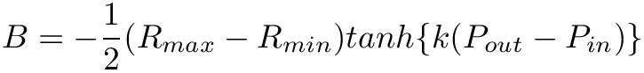
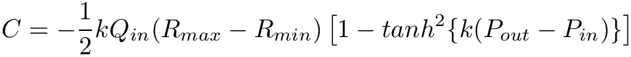

Note: In block_factory_map, the dictionary key should match the string specifying the type of block in the .json configuration/input file, and the dictionary value should match the class constructor name for the block.
If the new block requires special handling that is different from the current blocks (most new blocks do not), add a new category to BlockClass in src/model/BlockType.h
2. Create a class for the new block.
Class constructor
The new class will be inherited from Block. Define a constructor of the form:
block_type and block_class are the same as what was added in Step 1 above.
The names of the input parameters of the block are Param_1, ... , Param_N.
The properties of each parameter are defined by InputParameter, which specifies whether it is optional, an array, a scalar, a function, and its default value.
The names Param_1, ... , Param_N must be the same as the parameter names within the block definition in the .json configuration/input file.
Set up the degrees of freedom
The class must have a setup_dofs(DOFHandler &dofhandler) function.
This function typically only includes a call to the following function:
Block::setup_dofs_(DOFHandler &dofhandler, int num_equations, const std::list<std::string> &internal_var_names)
In the above function, num_equations is the number of governing equations for the new block.
internal_var_names is a list of strings that specify names for variables that are internal to the block, i.e. all variables for the block apart from the flow and pressure at the block's inlets and outlets.
This specifies how many elements the governing equations of the block contribute to the global F, E and dC_dy matrices respectively.
Details are in Step 3 below.
The class should have an update_constant function and may also contain update_time and update_solution functions. These functions implement the governing equations for the block. Details are in Steps 3-4 below.
Optional: The class can have an enum ParamId object that relates the parameter indices to their names.
This makes it easier to reference the parameters while implementing the governing equations of the block (discussed below).
The order of parameters in the ParamId object should match the order in the constructor.
The local state vector for each block is always arranged as y = [P_in, Q_in, P_out, Q_out, InternalVariable_1, ..., InternalVariable_N].
Here, InternalVariable* refers to any variable in the governing equations that are not the inlet and outlet flow and pressure. These are the same as those discussed above in the function setup_dofs.
The corresponding time-derivative of this state vector is ydot = dP_in/dt, dQ_in/dt, ...].
Note: The length of the state vector is typically four (inlet and outlet pressure and flow) plus the number of internal variables.
Governing equations
The equations should be written in the form E(t)*ydot + F(t)*y + C(y,ydot,t) = 0.
y is the local state vector mentioned above.
ydot is the time-derivative of the local state vector.
E and F are matrices of size number_of_equations*size_of_state_vector.
C is a vector of length number_of_equations.
E and F contain terms of the governing equation that multiply the respective components of ydot and y respectively.
C contains all non-linear and constant terms in the equation.
If the equation contains non-linear terms, the developer should also write out the derivative of C with respect to y and ydot. These will be stored in the block's dC_dy and dC_dydot matrices, both of which are size number_of_equations*size_of_state_vector.
An example
Assume a block has the following non-linear governing equations:

For this block, and  are the pressure and flow at the inlet respectively,  and  are the pressure and flow at the outlet, and is an internal variable.
The state vector is .
The contributions to the local F matrix are F[0,0] = b, F[1,2] = g and F[1,4] = h.
The contributions to the local E matrix are E[0,1] = a and E[1,2] = e.
The contributions to the local C vector are C[0] = c*(dP_in/dt)*Q_in + d and C[1] = f*Q_out*Q_out.
The contributions to the local dC_dy matrix are dC_dy[0,1] = c*(dP_in/dt) and dC_dy[1,3] = 2*f*Q_out.
The contributions to the local dC_dydot matrix are dC_dydot[0,0] = c*Q_in.
In this case, the block has 3 contributions to F, 2 contributions to E, and 2 constributions to dC_dy. So the class will have a member TripletsContributions num_triplets{3, 2, 2}.
4. Implement the matrix equations for the block.
Implement the update_constant, update_time and update_solution functions.
All matrix elements that are constant must be specified in update_constant.
Matrix elements that depend only on time (not the state variables) must be specified in update_time.
Matrix elements that change with the solution (i.e. depend on the state variables themselves) must be specified in update_solution.
Note: Not all blocks will require the update_time and update_solution functions.
Implementation details
The elements of the matrices E, F, dC_dy and dC_dydot are populated using the following syntax:
system.F.coeffRef(global_eqn_ids[current_block_equation_id], global_var_ids[current_block_variable_ids]) = a
Here, current_block_equation_id goes from 0 to number_of_equations-1 (for the current block) and current_block_variable_ids goes from 0 to size_of_state_vector-1 for the current block.
If the governing equations contain non-linear terms, these terms must be specified in update_solution as:
For non-linear equations, the derivative of the terms in C with respect to each state variable y and ydot must also be provided. These go into dC_dy and dC_dydot matrices.
A dC_dy matrix contribution can be specified using the following syntax:
system.dC_dy.coeffRef(global_eqn_ids[current_block_equation_id], global_var_ids[current_block_variable_id]) = a
Here, a is the derivative of the non-linear term in the equation with ID current_block_equation_id with respect to the local state variable with ID current_block_variable_id.
For example, if the non-linear term is in the first equation, then current_block_equation_id = 0.
For the derivative of this term with respect to P_in, set current_block_variable_id = 0, and for the derivative of this term with respect to P_out, set current_block_variable_id = 2.
The same indexing applies to derivatives with respect to the ydot state variables, i.e. for the derivative of the term with respect to dP_in/dt, set current_block_variable_id = 0.
Note: Any matrix and vector components that are not specified are 0 by default.
4. Add the new block to the build system.
Add MyNewBlock.h and MyNewBlock.cpp to src/model/CMakeLists.txt
5. Add the new block to svZeroDVisualization.
Follow the instructions here to make sure your new block can be visualized graphically.


![$[P_{in}, Q_{in}, P_{out}, Q_{out}, I_{1}]$](form_133.png)


![$[P_{in}, Q_{in}, P_{out}, Q_{out}, I_{1}]$](form_133_dark.png)